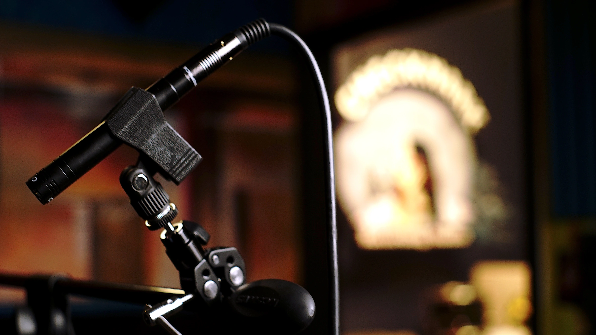

Before your session · 01 / 06
Q &
A.
Clear starting points for planning a consultation, preparing your project, and understanding what Checkmark Audio can help you make.

01What is included in a free consultation?+
A free consultation is a one-hour meeting that can include a studio tour, a conversation about your project, and pricing guidance. You can select an available time through the Checkmark Audio calendar.
02Do you work with first-time or beginner artists?+
Yes. Checkmark Audio works with artists of all experience levels, including first-time and beginner artists.
03What file formats do I get back after mixing or mastering?+
High-resolution WAV and MP3 files. Stem or raw-file delivery can be included in the project quote or approved as an additional service.
04Do you offer remote mixing and mastering?+
Yes. You may send your stems or a download link by email, and Checkmark Audio can complete the mixing or mastering work remotely. File preparation, price, and delivery details are confirmed for the project before work begins.
05What should I bring to my session?+
Bring anything relevant to the project: reference tracks, stems or DAW project files, prior work, instruments, and any unique gear you need. For work beginning from existing recordings, WAV stems are recommended.
06Can you record full bands, drums, podcasts, or voice-over?+
Yes. Checkmark Audio can record full bands, drums, podcasts, and voice-over projects.